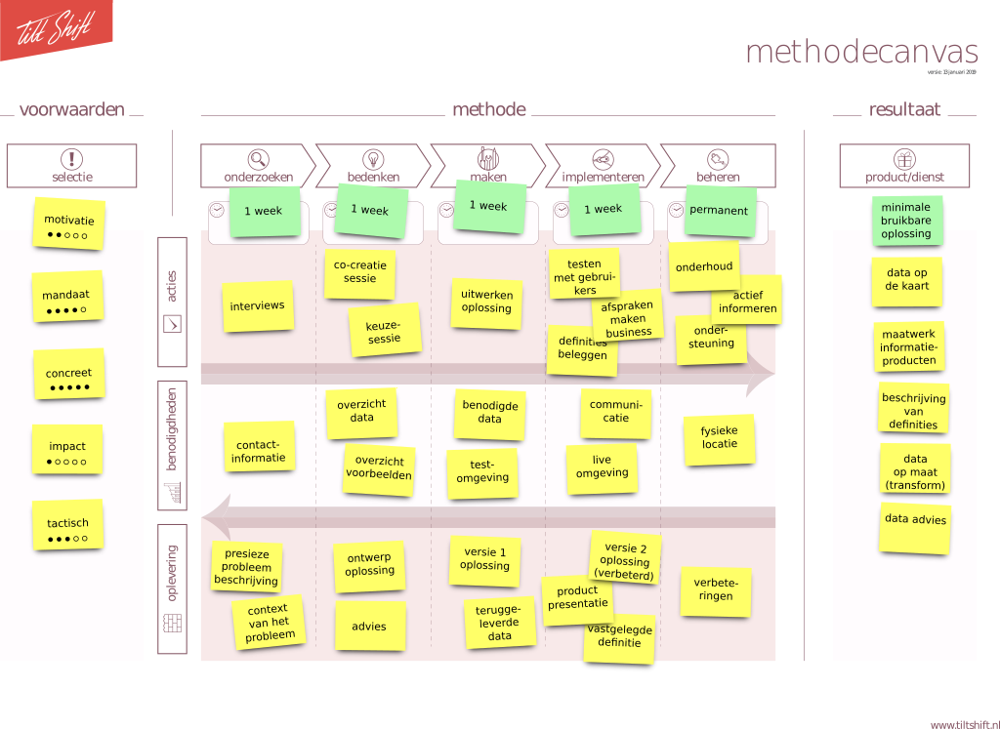

De kennisloods realiseert minimale bruikbare oplossingen voor concrete data problemen, en implementeert deze in de operatie.
Dat doen we in een proces van vier weken, in vier stappen:
Week 1: onderzoeken
We gaan met de probleemeigenaar in gesprek het precieze probleem en hoe dat een belemmering vormt in zijn of haar werkproces.
- Benodigde inzet probleemeigenaar: 2 sessies x 4 uur interview
- Benodigde inzet team Kennisloods (2 personen): 2 dagen x 8 uur
- 1 uur presentatie Go/No-go
Week 2: ontwerpen
Samen met de probleemeigenaar bedenken we een aantal mogelijke oplossingen en kiezen daaruit één oplossing om te realiseren.
- Benodigde inzet probleemeigenaar: 1 sessie x 4 uur co-creatie
- Benodigde inzet team Kennisloods (2 personen): 2 dagen x 4 uur
- 1 uur presentatie Go/No-go
Week 3: maken
In deze week maken we een minimale bruikbare versie van de oplossing, zodat we deze direct kunnen testen.
- Benodigde inzet probleemeigenaar: 1 sessie x 2 uur testen
- Benodigde inzet team Kennisloods (2 personen): 2 dagen x 8 uur
- 1 uur presentatie Go/No-go
Week 4: implementeren
Op basis van de feedback maken we een aantal aanpassingen, en introduceren de oplossing vervolgens in het werkproces.
- Benodigde inzet probleemeigenaar: gebruiken in de praktijk en feedback geven
- Benodigde inzet team Kennisloods (2 personen): 2 dagen x 8 uur
- 1 uur eindpresentatie
Vervolg: beheer en vervolg
Wij blijven aanspreekpunt voor ondersteuning en het (laten) realiseren nieuwe wensen.
- Benodigde inzet Kennisloods (1 persoon): 1 uur per week

INTAKE EN INTAKE-CRITERIA
Voor de intake wordt maandelijks een bijeenkomst georganiseerd, waarin probleemeigenaren hun probleem kunnen pitchen. Daarna worden de opgehaalde problemen toegevoegd aan de openstaande problemen. Deze worden door team kennisloods geprioriteerd op basis van de onderstaande criteria. Het hoogst scorende probleem wordt gekozen om in die maand op te lossen.
MOTIVATIE
- Is de probleemeigenaar in de organisatie gemotiveerd om het probleem aan te pakken?
- Is de probleemeigenaar voldoende beschikbaar voor deze methode?
- Haalt het oplossen van het probleem een frustratie/blokkade weg in het primaire werkproces?
- Zijn alle betrokken belanghebbenden beschikbaar en bereid?
MANDAAT
- Is er mandaat om nieuwe tools/KPI’s te introduceren?
- Is falen niet problematisch?
- Is er ruimte voor het herdefinitie van het probleem?
CONCREET
- Is het probleem “klein” te maken — en toch nog zinvol?
- Hebben we al meteen uitvoerbare ideeën voor oplossingen?
IMPACT
- Is een oplossing in potentie structureel in te zetten?
- Heeft een oplossing in potentie veel (verschillende) gebruikers?
TACTISCH
- Draagt een oplossing bij aan doel en promotie van Kennisloods?
- Draagt een oplossing bij aan een structurele faciliteit voor terugkerende ad-hoc vragen?